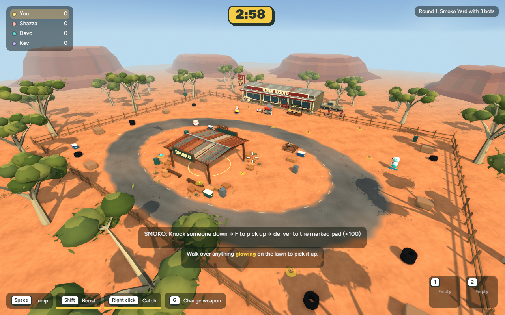
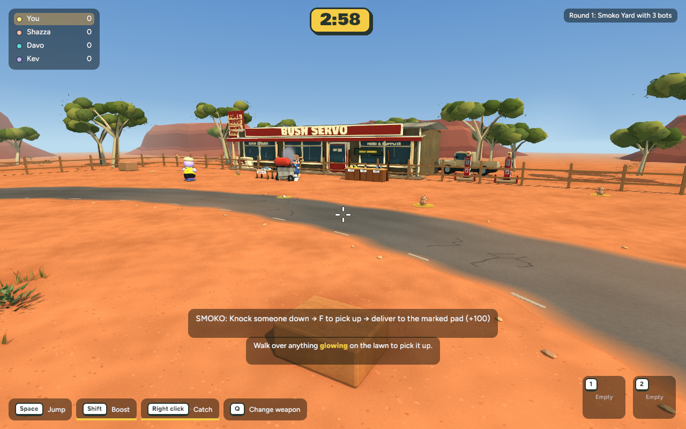
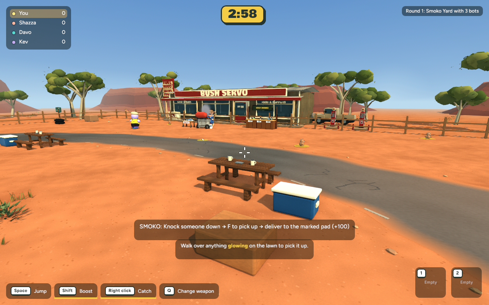
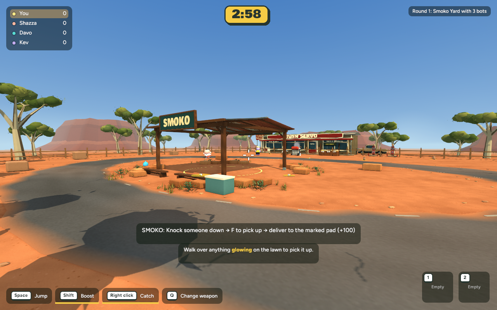
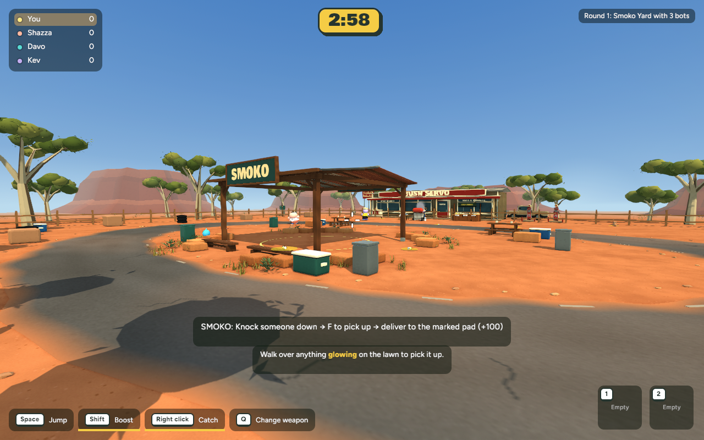
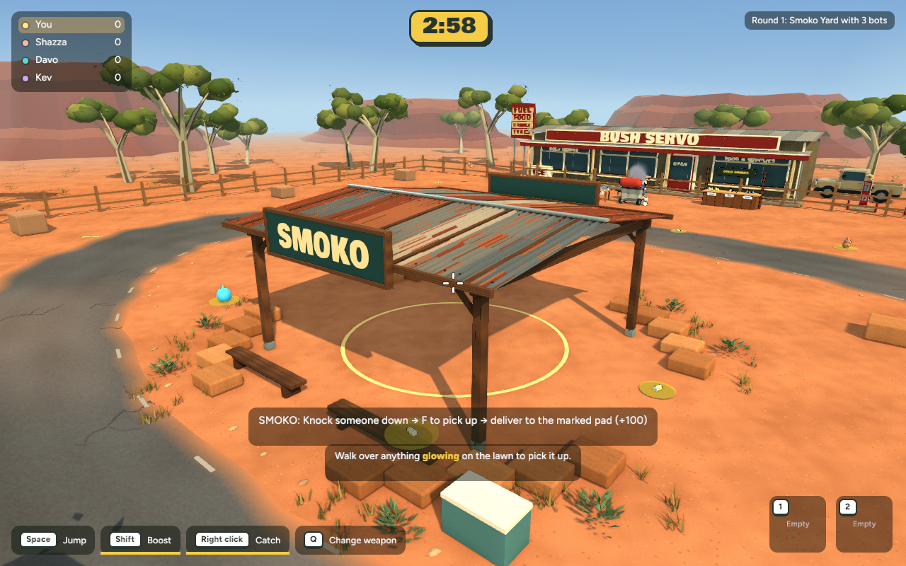
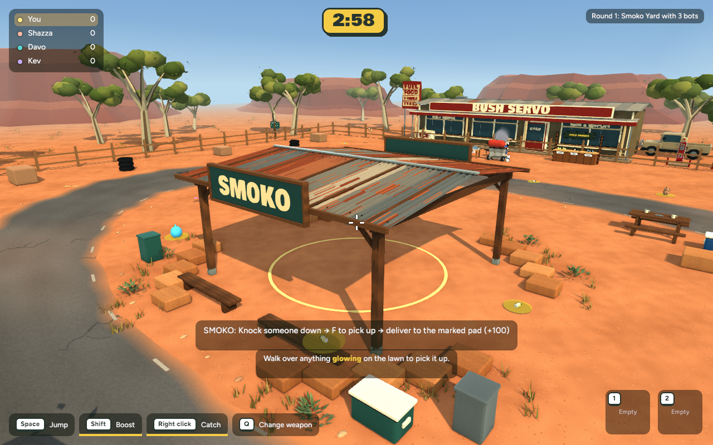
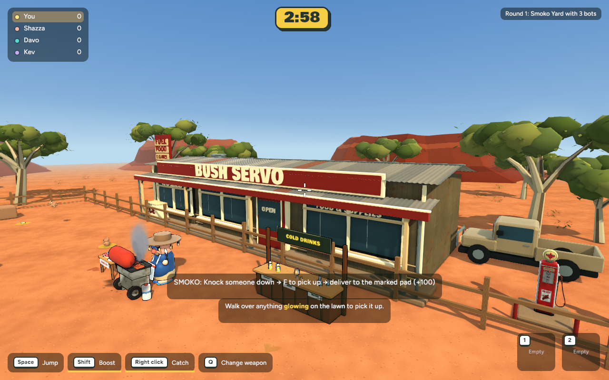
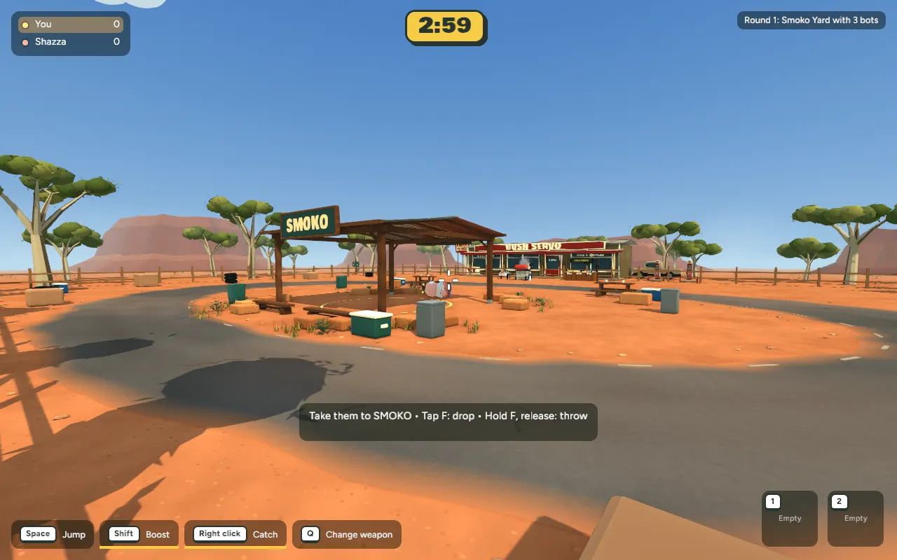

Arena and perimeter
Before — Stage 5
After — Stage 6

Stage 6 · 28 October 2026 · Actual implemented native game · Approved and published
Four detailed eskies (one replaces the existing simple esky), five bins, six tyre stacks, two picnic tables with four benches, enamel mugs and two roadside signs. Rounded lids, handles, latches, tyre tread and reused shelter timber tie the objects together. Existing shelter benches, fencing and stone edging remain.
Props sit in the infield and perimeter pockets. Shared collision bounds keep the scoring circle, approaches, road and spawns clear. Eskies, mugs and signs are decorative scenery, not new pickups or mechanics.









Scripted native Smoko delivery and camera movement. See checkpoint for measured outcome and test details.
| View | Mean milliseconds | Change | p95 milliseconds |
|---|---|---|---|
| overview | 7.158 → 7.557 | +5.6% | 8.436 → 12.765 |
| gameplay | 7.439 → 7.690 | +3.4% | 8.792 → 11.436 |
| close | 7.469 → 7.697 | +3.1% | 8.738 → 12.094 |
| servo | 7.267 → 7.755 | +6.7% | 8.848 → 11.050 |
| props | 7.771 → 7.878 | +1.4% | 11.160 → 12.592 |
600 wall-clock frame intervals per view at 1280×800, matched cameras and warmup, with builds stopped. These are not GPU timestamps or browser performance measurements. After averages are 127–132 FPS. Four baseline timings are from the previous evening; the picnic baseline and after runs are from this session. An extra baseline refresh was interrupted by Mac lock. Differences (+0.11–0.49ms) include session variation. The 2.19MB prop kit adds about 1.05MB decoded texture memory, with 42,272 triangles and ten material batches.
The map follows the concept’s small-prop categories and density without claiming an exact rendering match. Solid props use conservative box bounds; tyre corners and the space beneath tables are simplified. Small mugs are non-blocking decoration. Other maps retain their existing scenery. Native and browser builds pass; Stage 6 is now published with the browser movement correction. Refresh all players and create a fresh yard. Protocol 21 prevents older clients joining with incompatible collision layouts.
Verification and recovery checkpoint · Backyard regression capture
cd /Users/marcus/Claude/australian-bbq/rust ~/.cargo/bin/cargo run -p bbq_app --release -- --menu
Choose Maps / Game modes → Smoko Yard.